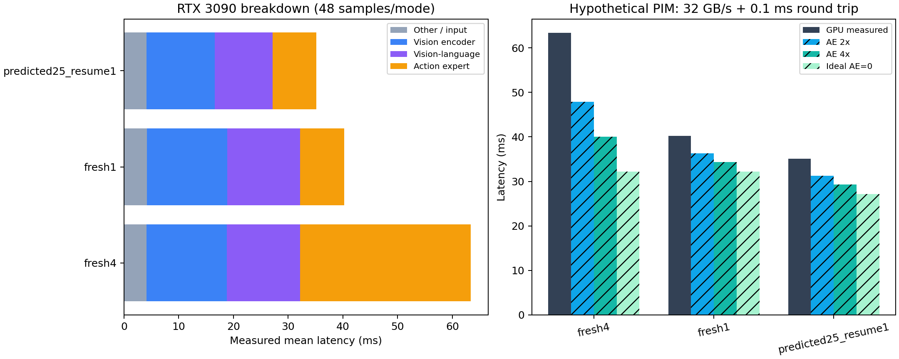

H=50 고정, GR00T N1.6 LIBERO, RTX 3090. 앞선 feature 탐색(초기 상태 0·4)에서 제외했던 초기 상태 1·2·3·5 × 3개 작업 = 12개 조건. 모델 학습 데이터와 분리된 일반화 검증을 뜻하지는 않습니다. 접촉·배치·서랍 작업이며 정밀 삽입 benchmark가 아닙니다.
표기: fresh4의 4는 액션 생성 계산 단계 N, k16의 16은 한 번에 실행하는 액션 수 K입니다. fresh는 현재 실제 관측으로 전부 새로 계산한다는 뜻이며 별도 모델이 아닙니다.
한 호출의 지연 감소, 액션당 계산 비용, 실제 완료 시간은 서로 다릅니다. 준비 비용 포함 여부와 성공률을 함께 비교해야 합니다. 미래 예측기는 현재 simulator 상태를 아는 nominal simulator이며 실제 미래는 읽지 않지만 배포 가능한 학습 예측기는 아닙니다.
K16 기준선을 유지할 근거가 더 강합니다. 동일 12개 조건에서 fresh4/K16은 동기·실시간 모두 8/12, fresh4/K4는 모두 7/12였습니다. 예측+25% 보정/K16도 8/12이고, 실시간 안정 유지에서는 8/12 대 기준선 7/12였으나 소표본의 한 사례 차이입니다.
부분 보정은 실제 대기 tick을 평균 5.9→0.1로 줄였습니다. 하지만 양쪽 모두 성공한 8개 조건에서 phase 단축은 평균 0.188초이고, 준비를 포함하면 오히려 평균 3.364초 느렸습니다. 현재 구현의 전체 시간 이득은 없습니다. 같은 조건에서 준비를 숨기지 않고 이기려면 전체 준비 비용이 평균 약 0.188초 이하여야 한다는 관측상 기준이 생겼습니다. 이는 배포 보장이나 일반적 임계값은 아닙니다.
실제 PIM은 미검증입니다. 다만 N4 action expert가 전체 지연의 약 절반이므로, 이 구간의 가속은 N4 계산을 유지하며 응답을 줄이는 후보입니다. 이미 N1로 줄인 방식에서는 PIM의 추가 이득 상한이 작아집니다.
동일한 prefix 이후 같은 물리적 시작 상태와 영상에서 비교했습니다. 이 표의 시뮬레이터는 추론 중 멈춥니다. 기본 성공은 한 번 이상 목표 달성, 종료 유지는 K-action chunk 종료 시 목표 유지입니다. 액션당 수치는 각 trial의 비율을 평균했습니다.
| 방식 | 성공 | chunk 종료 유지 | 호출 p50 ms | 도착 후 ms/action | 선행 모델+도착 후 ms/action | 준비 모델 평균 s | 준비 전체 평균 s |
|---|---|---|---|---|---|---|---|
| fresh1_k16 | 7/12 | 7/12 | 45.32 | 2.78 | 2.78 | 0.00 | 0.00 |
| fresh1_k4 | 7/12 | 7/12 | 41.16 | 10.41 | 10.41 | 0.00 | 0.00 |
| fresh4_k16 | 8/12 | 8/12 | 68.38 | 4.23 | 4.23 | 0.00 | 0.00 |
| fresh4_k4 | 7/12 | 7/12 | 64.61 | 16.40 | 16.40 | 0.00 | 0.00 |
| whole_s25_k16 | 8/12 | 8/12 | 39.43 | 2.47 | 13.94 | 0.66 | 3.72 |
| whole_s25_k4 | 8/12 | 8/12 | 35.91 | 9.01 | 51.49 | 2.44 | 5.60 |
GPU 추론은 별도 단일 worker에서 수행하고, 환경은 50ms마다 진행합니다. 다음 액션이 준비되지 않으면 이동 0·기존 gripper 명령을 실행합니다. 렌더링과 추론은 같은 3090을 사용합니다. 초기 예측 bank 준비 중에는 환경을 멈추며, 이 준비 시간을 포함한 열을 별도로 표시합니다. 미리 계산하는 시간을 공짜로 숨기지 않습니다.
whole_gate는 state/영상 오차가 작은 경우 보관한 예측 액션을 수용하고, 나머지는 25% feature 보정합니다. 임계값은 사전 고정한 휴리스틱이며 학습된 안전 판정기가 아닙니다. 안정 성공은 첫 목표 달성 뒤 이동 0·동일 gripper를 10스텝 유지한 별도 진단입니다.
| 방식 | 성공 | 0.5초 유지 | worker p50 ms | 평균 대기 ticks | 평균 phase s* | 준비 포함 s* | worker ms/action | 선행 모델 포함 ms/action | 예측 수용/호출 |
|---|---|---|---|---|---|---|---|---|---|
| fresh1_k16 | 7/12 | 6/12 | 45.24 | 4.8 | 4.55 | 4.55 | 3.12 | 3.12 | 0/70 |
| fresh1_k4 | 7/12 | 7/12 | 45.05 | 18.1 | 4.70 | 4.70 | 11.61 | 11.61 | 0/233 |
| fresh2_k16 | 8/12 | 6/12 | 54.61 | 5.6 | 4.53 | 4.53 | 3.63 | 3.63 | 0/68 |
| fresh4_k16 | 8/12 | 7/12 | 71.85 | 5.9 | 4.60 | 4.60 | 4.99 | 4.99 | 0/71 |
| fresh4_k4 | 7/12 | 7/12 | 71.71 | 19.5 | 4.76 | 4.76 | 18.50 | 18.50 | 0/234 |
| whole_gate_k16 | 8/12 | 7/12 | 39.50 | 0.2 | 4.49 | 8.21 | 1.62 | 14.70 | 22/71 |
| whole_s25_k16 | 8/12 | 8/12 | 39.22 | 0.1 | 4.47 | 8.21 | 2.75 | 15.95 | 0/71 |
| whole_s25_k4 | 8/12 | 8/12 | 39.01 | 0.2 | 4.57 | 10.16 | 9.52 | 53.53 | 0/277 |
gate 수용에는 처음부터 정확한 준비 시작 프레임이 포함됩니다. 이를 제외한 실제 미래 호출에서는 10/59회 수용했습니다. gate의 성공률은 부분 보정과 같았으나 안정 유지가 7/12 대 8/12였습니다. 이 임계값의 정확도 우위는 확인하지 못했습니다.
* 전체 평균에는 실패 시 고정 시간 예산까지 실행한 trial도 포함됩니다. 성공률이 다른 방법의 평균 시간만으로 빠르다고 판단하지 않습니다. 아래는 양쪽 모두 성공한 같은 초기 조건의 시간 차이입니다. 음수는 method가 더 빠름을 뜻합니다.
| 방식 | 기준 | 성공 이김/짐 | 양쪽 성공 쌍 | phase 차이 s | 준비 포함 차이 s |
|---|---|---|---|---|---|
| fresh1_k16 | fresh4_k16 | 0/1 | 7 | -0.108 | -0.108 |
| whole_gate_k16 | fresh4_k16 | 0/0 | 8 | -0.169 | 3.373 |
| fresh4_k4 | fresh4_k16 | 0/1 | 7 | 0.257 | 0.257 |
| fresh1_k4 | fresh4_k16 | 0/1 | 7 | 0.163 | 0.163 |
| whole_s25_k16 | fresh4_k16 | 0/0 | 8 | -0.188 | 3.364 |
| fresh2_k16 | fresh4_k16 | 0/0 | 8 | -0.107 | -0.107 |
| whole_s25_k4 | fresh4_k16 | 1/1 | 7 | -0.051 | 5.208 |
| fresh4_k16 | fresh1_k16 | 1/0 | 7 | 0.108 | 0.108 |
| whole_gate_k16 | fresh1_k16 | 1/0 | 7 | -0.014 | 3.508 |
| fresh4_k4 | fresh1_k16 | 0/0 | 7 | 0.365 | 0.365 |
| fresh1_k4 | fresh1_k16 | 0/0 | 7 | 0.271 | 0.271 |
| whole_s25_k16 | fresh1_k16 | 1/0 | 7 | -0.035 | 3.497 |
| fresh2_k16 | fresh1_k16 | 1/0 | 7 | 0.078 | 0.078 |
| whole_s25_k4 | fresh1_k16 | 1/0 | 7 | 0.057 | 5.316 |
아래는 실제 동시 선행 계산의 측정값이 아닙니다. 준비가 기존과 같은 속도로 진행되고 GPU·CPU·렌더링 경합과 예측 정확도 저하 없이 겹쳐진다는 낙관적 시간 계산입니다. 준비가 끝난 뒤의 실제 제어 구간은 위에서 측정했습니다.
| 미리 사용할 수 있는 시간 s | 기준선 대비 예상 총 시간 차이 s |
|---|---|
| 0.0 | +3.364 |
| 0.8 | +2.564 |
| 1.6 | +1.764 |
| 3.2 | +0.164 |
| 4.0 | -0.151 |
| 6.4 | -0.188 |
동일하게 성공한 8개 조건 평균에서 손익분기 선행 여유는 이 가정하에 약 3.49초입니다. K16의 0.8초만큼 겹치는 것으로는 부족합니다. 더 긴 확정된 접근 동작이 있거나, 준비 비용 자체를 크게 줄이는 예측기가 필요합니다. 이 조건의 실제 동시 실행은 미검증입니다.
핵심 K16 방식 네 개를 같은 12개 초기 조건에서 역순으로 다시 실행했습니다. 새 독립 초기 조건 12개가 추가된 것은 아닙니다. 성공 판정이 바뀐 경우와 안정 유지 판정이 바뀐 경우를 각각 표시합니다.
| 방식 | 두 번째 성공 | 두 번째 안정 유지 | 성공 판정 변동 | 안정 유지 변동 | 평균 대기 tick | 평균 phase s | 준비 포함 s |
|---|---|---|---|---|---|---|---|
| fresh1_k16 | 7/12 | 6/12 | 0 | 0 | 4.8 | 4.55 | 4.55 |
| fresh2_k16 | 8/12 | 6/12 | 0 | 0 | 5.7 | 4.56 | 4.56 |
| fresh4_k16 | 8/12 | 7/12 | 0 | 0 | 5.9 | 4.60 | 4.60 |
| whole_s25_k16 | 8/12 | 8/12 | 0 | 0 | 0.0 | 4.47 | 8.22 |

각 방식 12개 관측 × 4회 = 48회. 표는 단계 평균이며 합산 가능한 수치입니다. 예측 보정은 도착 후 비용만 포함합니다. K는 같은 호출의 연산량을 바꾸지 않고 호출 빈도와 실행할 action 수를 바꿉니다.
| 방식 | 입력 ms | 영상 ms | 영상·언어 ms | state ms | expert ms | 변환 ms | 전체 평균 ms |
|---|---|---|---|---|---|---|---|
| fresh1 | 3.87 | 14.69 | 13.35 | 0.10 | 8.01 | 0.14 | 40.20 |
| fresh4 | 3.78 | 14.68 | 13.40 | 0.10 | 31.19 | 0.15 | 63.35 |
| predicted25_resume1 | 3.79 | 12.51 | 10.58 | 0.10 | 7.95 | 0.15 | 35.11 |
PIM 결과는 실측이 아닌 가정입니다. action encoder·DiT·action decoder·latent 갱신 전체를 PIM으로 옮기고, weights는 이미 상주하며 conditioning/latent는 호출당 한 번 왕복한다고 가정합니다. state 결합과 backbone은 GPU에 남습니다. 선택한 dtype의 정확도 유지, nonlinear 연산 지원, 내부 메모리 대역폭 및 실제 AE 가속률은 검증하지 않았습니다.
현재 관측에서 가장 큰 왕복 activation payload: 881,064 bytes. 32GB/s 링크 + 고정 왕복 0.1ms 예시에서는 전송 약 0.128ms입니다. 모델 weight 전송은 포함하지 않습니다. 상주 parameter bytes는 실제 DRAM traffic이 아닙니다.
| 방식 | GPU 실측 ms | AE 2x 가정 ms | AE 4x 가정 ms | AE=0·전송=0 ms | 이상적 최대 가속 |
|---|---|---|---|---|---|
| fresh1 | 40.20 | 36.33 | 34.32 | 32.19 | 1.25x |
| fresh4 | 63.35 | 47.89 | 40.09 | 32.17 | 1.97x |
| predicted25_resume1 | 35.11 | 31.26 | 29.28 | 27.16 | 1.29x |
정지한 한 장면에서 방식당 16회 측정했습니다. 실제 작업 전체의 시간이나 성공률은 아닙니다. 고립된 profile과 실제 제어 worker 지연을 같은 값으로 취급하지 않기 위한 추가 검사입니다. PIM 가정에서는 측정된 non-AE 시간을 고정하므로, 실제 offload가 GPU 경합을 바꾸는 효과는 모델링하지 않습니다.
| 방식 | 현재 실측 ms | expert ms | AE 2x 가정 ms | AE 4x 가정 ms | AE=0·전송=0 ms |
|---|---|---|---|---|---|
| fresh1 | 42.82 | 8.54 | 38.68 | 36.54 | 34.28 |
| fresh2 | 53.63 | 18.53 | 44.49 | 39.86 | 35.10 |
| fresh4 | 68.95 | 34.76 | 51.70 | 43.01 | 34.19 |
| predicted25_resume1 | 36.68 | 8.33 | 32.64 | 30.55 | 28.34 |
카메라 관측을 얻은 뒤 다음 제어 시점까지 남는 시간도 고려해야 합니다. 50ms 주기라도 모델이 50ms 전체를 사용할 수 있는 것은 아닙니다. PIM 4x 가정만으로 실제 제어 deadline 충족을 보장하지 않습니다.
아래는 측정값을 바탕으로 한 계산기이며 실제 PIM 측정이 아닙니다.
전체 집계·짝 비교 · K 실험 원자료 · 실시간 원자료·실행 action trace · PIM 전체 가정 표 · 텐서·parameter bytes · 벡터 그림